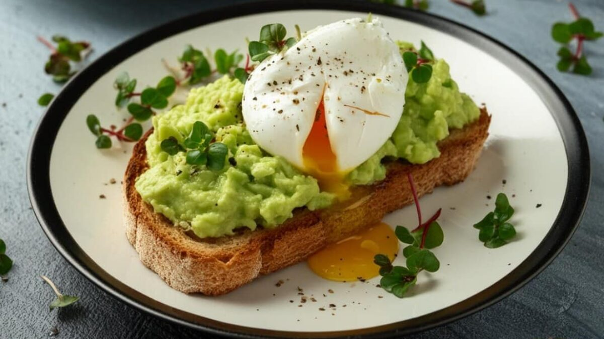

Tostada de Aguacate y Huevo

Ingredientes (1 porción)
- 1 rebanada de pan integral
- 1/2 palta madura
- 1 huevo
- 1/2 cucharadita de jugo de limón
- Sal y pimienta al gusto
- 1 cucharadita de aceite de oliva (opcional)
Preparación
- Tuesta la rebanada de pan a tu gusto.
- Machaca la palta con el jugo de limón, sal y pimienta.
- Cocina el huevo al gusto (pocheado, a la plancha o hervido).
- Unta la palta sobre la tostada, coloca el huevo encima y termina con un chorrito de aceite si deseas.